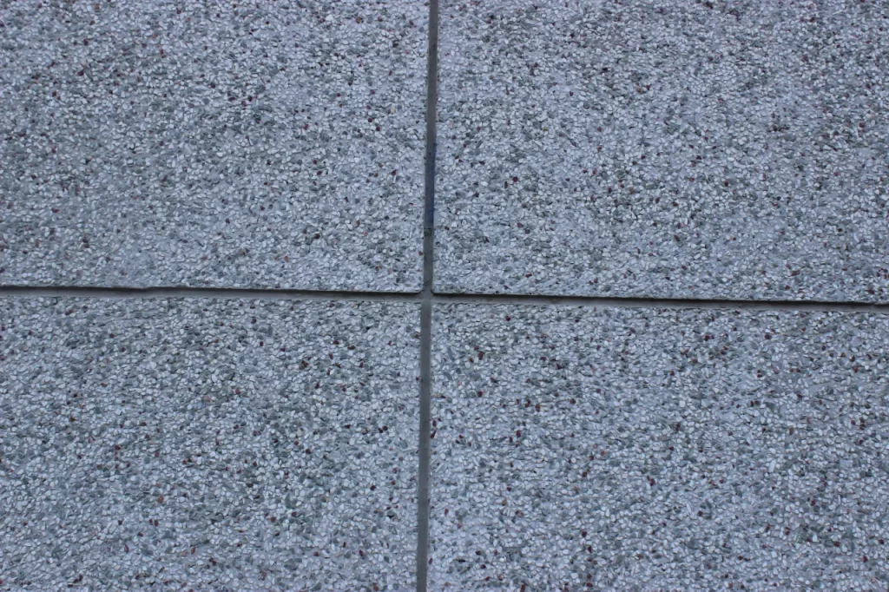

Taş Sıva mı Duvar Kumaşı mı? — 2025 Karşılaştırma Rehberi
Fethiye ve kıyı iklimlerinde taş sıva ile duvar kumaşı (tekstil kaplama) arasındaki farklar: dayanım, akustik, bakım, uygulama ve maliyet unsurları. İlgili hizmet sayfaları: Taş Sıva • Duvar Kumaşı.

Giriş
Duvar kaplaması seçerken iki popüler alternatif öne çıkıyor: taş sıva (mineral esaslı, yüksek dayanım) ve duvar kumaşı (tekstil/selüloz esaslı dekoratif kaplama). Estetik, akustik ve bakım beklentilerinize göre doğru seçimi yapmak, toplam maliyeti ve memnuniyeti doğrudan etkiler.
Hızlı Karşılaştırma
| Özellik | Taş Sıva | Duvar Kumaşı |
|---|---|---|
| Dayanım | Yüksek yüzey sertliği, darbe ve çizilmeye dirençli | Orta; noktasal hasarda lokal tamir kolay |
| Akustik | Yansımayı azaltır ancak sınırlı | Doku yapısı sayesinde akustik konforu artırır |
| Neme Direnç | Uygun astar ile iyi; küf/lekede daha dirençli | Buhar geçirgen; aşırı nemde ürün seçimi kritik |
| Bakım/Tamir | Zımpara & rötuş gerekebilir; profesyonel müdahale | Lokal tamir ve parça yenileme daha kolay |
| Görsel Etki | Doğal taş dokusu, premium algı | Sıcak, tekstil hissi; desen/doku çeşitliliği |
| Uygulama Hızı | Katlar arası kuruma süreleri ile orta | Hızlı; alan büyüklüğüne göre aynı gün içinde |
Nerede Hangisi?
- Giriş holü / koridor: Darbe ve sürtünme yüksek → Taş sıva öne çıkar.
- Yatak odası / TV duvarı: Akustik ve sıcak doku → Duvar kumaşı daha uygun.
- Kıyı iklimi (Çalış, Göcek): Yoğun nem/UV varsa doğru astar ve ürün seçimi şart.
- Kiracı sirkülasyonu yüksek daire: Kolay yenileme isteyenler için duvar kumaşı.
- Vurgu duvarı & premium görünüm: Taş sıva ile süreklilik ve derinlik.

Uygulama & Bakım
- Yüzey Hazırlığı: Eski boya/sıva zayıf katmanları alınır, yüzey tozdan arındırılır, uygun astar sürülür.
- Taş Sıva: Katlar arası kuruma sürelerine uyun; birleşim ve köşelerde sürekliliği ışık altında kontrol edin.
- Duvar Kumaşı: Ürün talimatına göre karışım/dinlendirme; ek yerlerini desenle gizleyin.
- Bakım: Taş sıvada nemli bezle silme; duvar kumaşında yumuşak bez ve leke testini görünmeyen noktada yapın.
Maliyet (2025)
Metraj, doku yoğunluğu, yüzey hazırlığı ve erişim koşulları (sökme/koruma) toplam maliyeti belirler. Net teklif için keşif ve küçük alan numunesi öneririz.
| Kapsam | Açıklama | Aralık |
|---|---|---|
| Taş sıva — standart duvar | 2 kat, mineral esaslı, temel astar | ₺ … / m² |
| Duvar kumaşı — standart duvar | Tekstil/selüloz esaslı kaplama | ₺ … / m² |
| Vurgu duvarı | Özel doku/desen, ek işçilik | ₺ … / m² |
| Rötuş & bakım | Lokal onarım | ₺ … |
Sık Yapılan Hatalar
- Numunesiz renk/doku seçimi → beklentiden farklı sonuç.
- Kuruma sürelerine uymamak → çatlama/kabarma.
- Ek yerlerini yanlış yönlendirmek → görsel süreksizlik.
Sık Sorulan Sorular
Nemli iklimde hangisi daha güvenli?
Doğru astar ve ürünle taş sıva daha toleranslıdır; duvar kumaşında ise ürün seçimi ve havalandırma kritiktir.
Çocuklu evler için öneriniz?
Koridor/giriş gibi darbe alan bölgelerde taş sıva; yatak odası/çalışma alanında akustik için duvar kumaşı.
Sonradan renk değiştirmek istersem?
Taş sıvada boya ile kaplama yapılabilir; duvar kumaşında lokal sök-tak veya ürün üstü uygulama seçenekleri değerlendirilebilir.
Teklif Çağrısı
Numune ve yazılı kapsamla risksiz ilerleyin. Projenizi planlayalım.